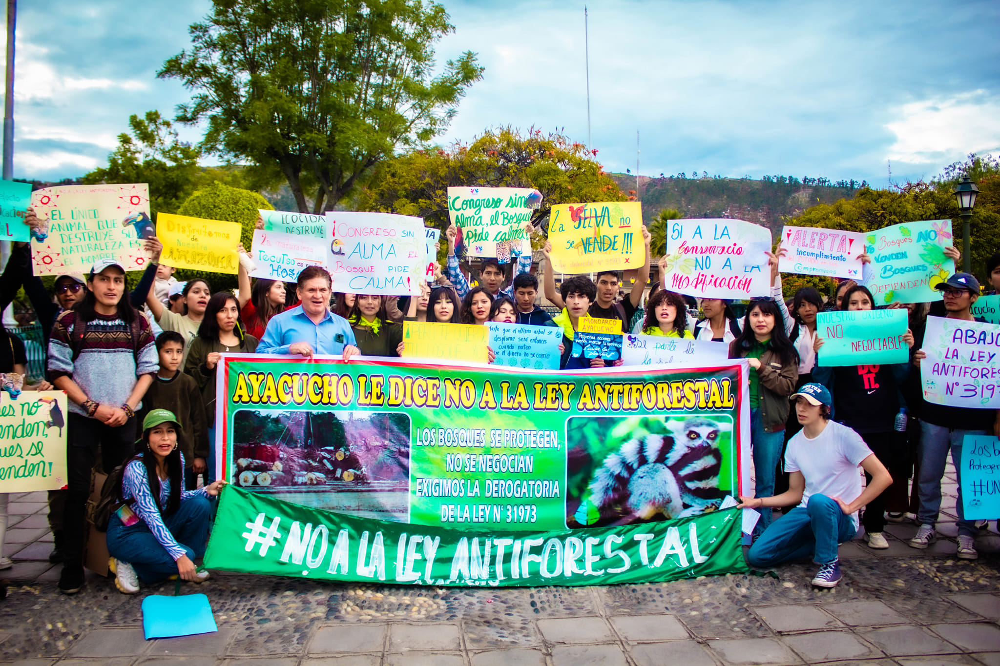

Somos una comunidad de Ayacucho comprometida con el rescate, protección y adopción responsable de perritos en situación de abandono. Trabajamos con amor, dedicación y respeto por la vida animal, ofreciendo una segunda oportunidad a quienes más lo necesitan. Impulsamos campañas de esterilización, vacunación, reubicación y adopción, con el apoyo de voluntarios y personas solidarias que comparten nuestro propósito. Creemos que adoptar es un acto de amor y que cada peludito merece un hogar lleno de cuidado y cariño.
¿Quiénes Somos?

Asociación civil sin fines de lucro
Nuestra misión es rescatar animales de la calle en pésimas condiciones, curarlos, esterilizarlos y darlos en adopción. Tenemos un albergue con capacidad para albergar un máximo de 85 perritos de manera adecuada según sus necesidades, sin tenerlos hacinados.
No somos un Albergue eutanásico
Los animales no tienen un límite de tiempo para permanecer en el albergue. Si no llegan adoptantes para algunos casos, ellos se quedan con nosotros hasta el fin de sus días. Tenemos perritos de todas las edades, desde cachorros hasta viejitos. Todos reciben trato personalizado según lo que necesiten.
Nuestro Impacto
120Albergados
300Adoptados
200Rescatados